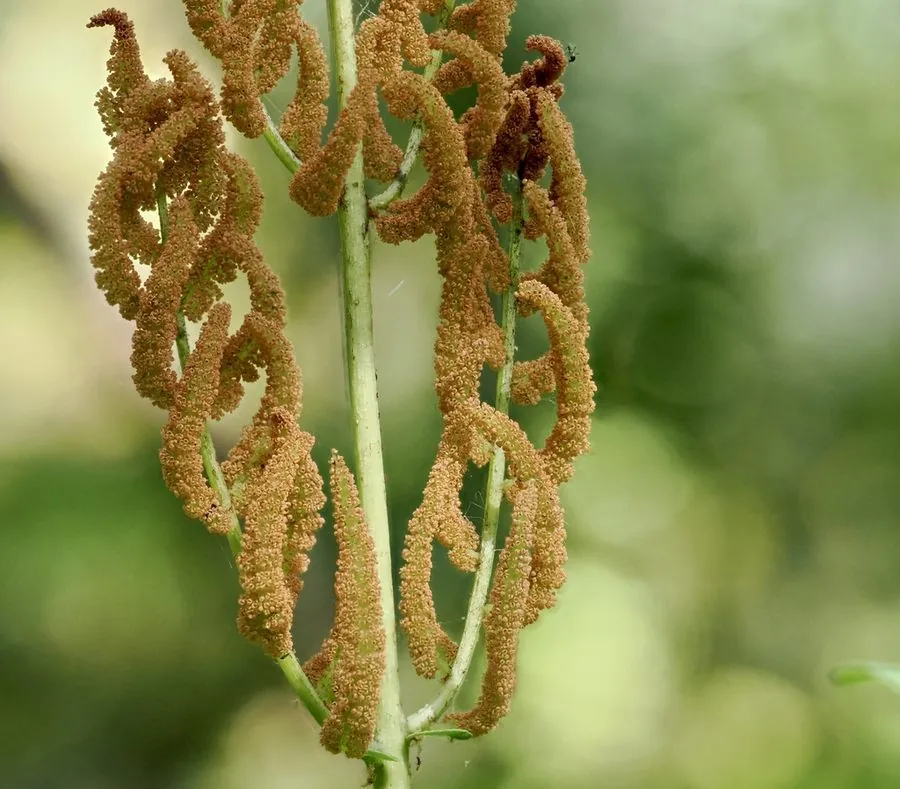

蕨类与裸子植物 · 植物界
王紫萁 Osmunda regalis

王紫萁是紫萁类中株形最大的种类，孢子叶顶端紧缩成穗，形似“王冠”，是湿地与林缘的观赏蕨类。
- 分类
- 门蕨类植物门纲水龙骨纲目紫萁目科紫萁科属紫萁属
- 栖息环境
- 溪边、沼泽边缘与林下阴湿处，喜水湿半阴
- 地理分布
- 中国东北、华北、西南及北半球温带地区
- 保护级别
- 暂无评估；野生种群较少，需保护湿地生境
物种志
王紫萁是紫萁科多年生蕨类，株高 0.8–2 m。根状茎粗壮，叶二型或同型：营养叶为二回羽状复叶，羽片宽大、排列整齐，叶色鲜绿，入秋常转为黄褐色；孢子叶位于叶的上部，羽片强烈紧缩，密生褐色孢子囊，形似一簇穗状花序，远远望去像戴着一顶王冠。
王紫萁喜水湿、半阴环境，常生于溪边、沼泽边缘与林下阴湿处，在温带地区分布较广。它以孢子繁殖，根状茎可蔓延，是湿地绿化的优良蕨类。王紫萁株形高大、叶姿优美，孢子叶如穗，观赏性强，适合水景园、溪流边与阴湿林地栽植。它对水分要求较高，怕干旱。王紫萁与紫萁等近缘种外形相似，主要区别在孢子叶的位置和羽片形态，观察时需留意细节。
形态与习性
- 株高0.8–2 m
- 叶二回羽状复叶，宽大整齐
- 孢子叶位于叶上部，紧缩成穗状
- 观赏株形高大，适合水景园
- 习性喜水湿半阴，怕干旱
趣味知识
- 王紫萁的孢子叶紧缩成穗，长在叶的上部，像戴着一顶王冠。
- 它是紫萁类中株形最大的种类，适合水景园和溪边栽植。
- 王紫萁喜水湿，怕干旱，常生于溪边和沼泽边缘。